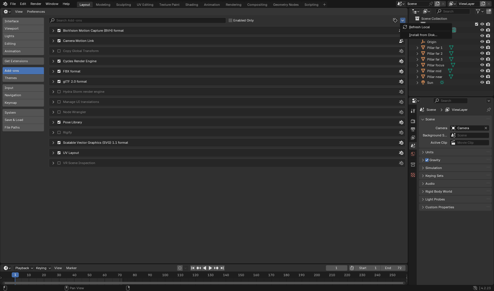
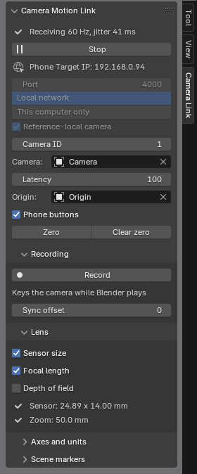
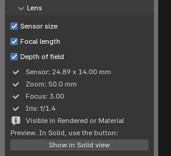
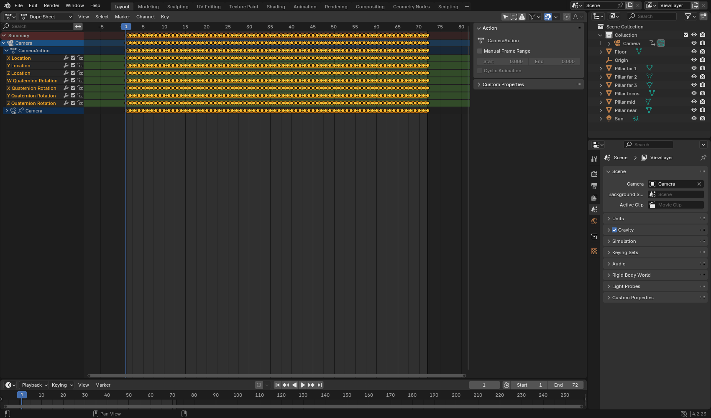
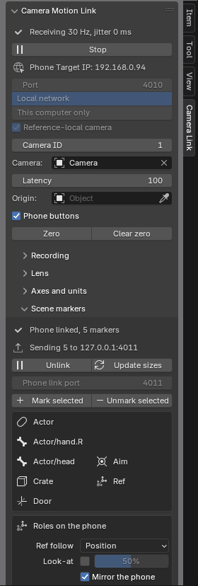
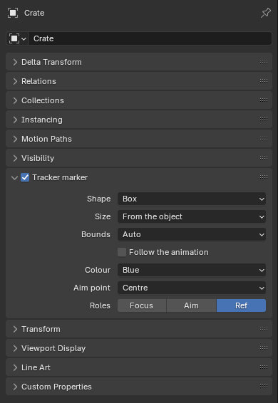

Before you start
You need Blender 4.2 or newer, an Android phone running Camera Motion Studio, and a shared local network. Camera Motion Link (formerly Camera Tracker Link) is available as a beta add-on from the GitHub release page. The repository includes the source code and illustrated user guide.
Use matching current app and add-on builds: the current camera message includes both local and world poses, and an older receiver cannot read it. The add-on is plain Python with no extra dependencies. It is designed for Windows, macOS, and Linux; development and testing so far have been on Windows with Blender 4.2 and 5.2.
Install Camera Motion Link
- Open the GitHub release page and, under Assets, download
camera_motion_link-0.1.0.zip. Choose the extension ZIP, not GitHub's Source code archives. Leave the ZIP compressed. - In Blender, open Edit > Preferences > Add-ons.
- Open the menu in the top right, choose Install from Disk, and select the downloaded extension ZIP.
- Check that Camera Motion Link is enabled. Its network permission lets it receive tracking data and send linked scene markers; allow Blender through the computer firewall on your local network if needed.

Set up the phone stream
New to the app? The app guide explains each mode and setting mentioned below.
In the setup wizard, choose Blender. It selects OSC and unicast, pre-fills port 4000, and keeps position units in metres. Enter the computer's local address as Target IP. The wizard also enables the OBS and NDI return-viewfinder options.
You can verify or change these values later under Settings > Stream: Protocol = OSC, Target IP = the computer running Blender, Port = the add-on's listening port, and Camera ID = the ID selected in Blender. The default Camera ID is 1.
Connect the camera in Blender
- Open a 3D viewport, press N, and select the Camera Link tab. Its Phone Target IP is the computer's address to enter on the phone. If several addresses appear, use the one on the phone's network.
- Choose an unparented camera to drive (or leave it empty for the scene camera). Keep Listen on set to Local network. Set the add-on's Port and Camera ID to match the phone;
-1accepts any camera ID. - Press Start in Blender, then start streaming on the phone. The panel shows incoming pose rate and network jitter.
- Create an Empty where the shot should begin and choose it as the Origin. Point its green +Y axis in the camera's starting direction, hold the phone at its starting pose, and press Zero in Blender. Move or rotate the Origin later to re-place the shot; Clear zero restores the phone's own position and heading.

Look through the camera with Numpad 0 or View > Cameras > Active Camera. If the panel asks you to raise Latency, increase it gradually: more latency absorbs more network jitter but adds delay.
For life-size movement, leave the phone's Space scale and the add-on's Axes and units > Position scale at 1. The add-on converts metres using Blender's scene Unit Scale. With Unit System None, it uses one Blender unit per metre. Keep the phone's axis mapping on Default.
Calibrate the lens
In the phone's Settings > Lens, calibrate zoom, focus, and iris. In Camera Motion Link's Lens panel, Sensor size and Focal length are enabled by default. Calibrated zoom drives focal length; uncalibrated lens channels are ignored. Match Blender's render aspect ratio to the sensor aspect ratio shown in the panel.
Enable Depth of field to drive calibrated focus distance and iris; this option starts off. If a Blender Focus Object is set, it takes precedence over numeric focus distance. To see depth of field, look through the camera in Material Preview or Rendered mode, or use Show in Solid view in the Lens panel.

Record a timed take
With a live signal arriving, place Blender's playhead at the first frame of your take. Press Record in Camera Link, or use the phone's OSC record button with Pro. Blender plays its timeline and keys the camera's position, rotation, and any driven lens values on each frame. Use Stop recording to end the take, or let the playback range end. Wait for Finishing the take to clear before inspecting the final keys.
Every phone pose includes its sensor capture time. The add-on places samples on that timeline and displays them with a short adjustable Latency (60 ms by default) to hide Wi-Fi jitter. Recording uses those capture times to space keys evenly rather than keying packets as they happen to arrive. Sync offset can shift a take to align it with delayed video or audio; a positive value moves the take later.

Record locally on the phone and export afterwards. This avoids missing live network packets. The Blender add-on's live recording is useful for immediate editing in the scene, while phone-side recording preserves the source take.
While streaming, Camera Motion Link drives the camera transform every update; existing camera animation can fight the live view. Use a camera without an existing take, or back up its animation before recording. Recording over frames that already contain keys replaces those keys; keys outside the take remain. Stop the receiver before playing back the recorded animation.
For FBX, calibrate the lens before recording and use the take's available As streamed export options to preserve the operated rig/look-at result. Effects and smoothing options can change the exported movement. For a metre-scale Blender scene, use Metric, Unit Scale 1, leave the app's Space scale, add-on Position scale and FBX Position scale at 1, and import the FBX at Scale 1. Current FBX exports store centimetre coordinates with matching unit metadata; Blender converts them on import. If you previously used a compensating FBX scale, re-export the take with the updated app and remove that override. FBX export requires Pro and an app build with FBX export available.
Send scene markers to the phone
Camera Motion Link can send marked Blender objects, collections, and armature bones back to the phone as a Live scene. Blender owns the marker geometry and animation; the phone operator can choose markers for focus, aim, and reference movement.
- On the phone, enable Settings > Stream > Scene link > Accept a marker link. Its link port defaults to
4001; match it to Blender's Phone link port, which is separate from the pose receiver port. - In Blender's Scene markers panel, select objects and choose Mark selected. In Object Properties > Tracker marker, choose a shape, aim point, and roles. Collections can be marked from Collection Properties; bones can be added under an armature's Tracker marker > Bone markers. The link sends up to 16 markers, including bones.
- Start the OSC receiver and stream from the phone so Blender learns its address. Choose Link markers to the phone, then approve the connection on the phone. Check that Blender reports Phone linked. Stopping the receiver or choosing Unlink closes the live scene.

In each marker's Tracker marker panel, switch on Focus, Aim, or Ref. One marker can hold several roles; each role belongs to only one marker. Under Roles on the phone, Mirror the phone is on by default, so role choices made on the phone are reflected in Blender. Send roles to phone reapplies Blender's choices. Enable Look-at here to set the aim strength, or leave it off for the phone operator to choose.

Use Default axis mapping and check placement before relying on it in a shot.
Ride a scene reference
Give a marker the Ref role in its Tracker marker panel. Use a Point shape or set its Aim point to Base. In Scene markers > Roles on the phone > Ref follow, choose Position to move with the reference, or Position + heading to turn with it too.
Reference-local camera is enabled by default; stop the receiver before changing it, then start again. For supported references, Blender interpolates the local camera motion and places it against the current scene reference, reducing the reference's round-trip delay. Hold (including its release blend), replay, Aim, Focus-driven movement, stale links and unsupported reference operations use the phone's world pose instead. Disabling the option also uses that world pose.
Receiver recordings always key the phone world camera. A live reference preview and the recorded take can therefore differ if the reference was delayed. Marker animation is not recorded with the phone take, and reference changes can cause a correction. This workflow uses an unparented camera; it does not implement a parented recording rig.
Connection checks
- No packets: compare the add-on's Phone Target IP with the app's Target IP, check the UDP port, and confirm the phone is streaming OSC rather than FreeD. Keep Blender on Local network, not This computer only, and allow it through the firewall on the phone's network.
- Wrong Camera ID: match the ID on both ends. The filter applies to phone buttons as well as poses.
- No signal after receiving: check that the phone's stream is still running. Old packets do not mean tracking is still live.
- Markers do not link: first get poses arriving, then check Accept a marker link, the separate marker port (normally 4001), and the approval prompt on the phone.
- Recorded camera will not play back: stop the receiver so incoming motion no longer overrides its animation.